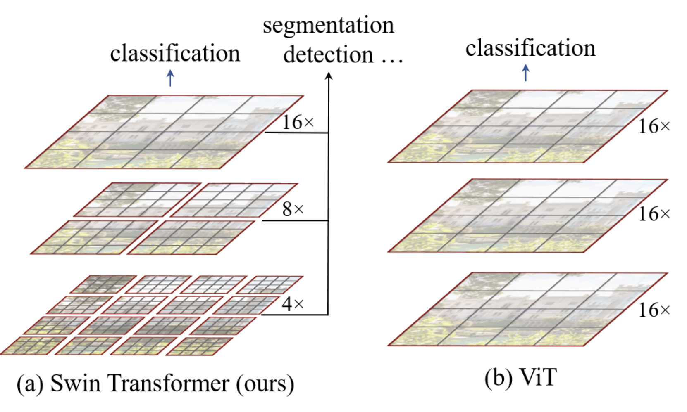
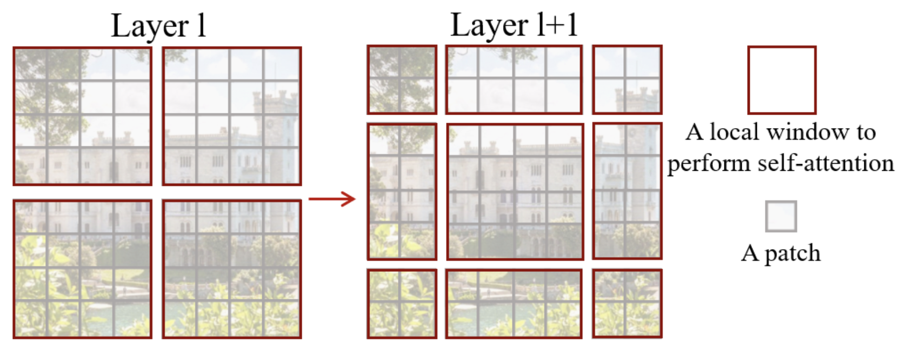
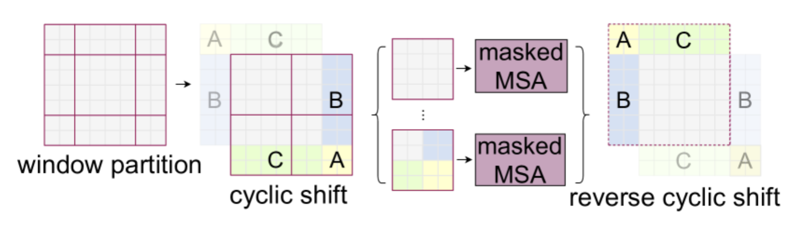

Swin Transformer#
本笔记本分析论文《Swin Transformer: 基于移位窗口的分层视觉变换器》。该论文提出了一种改进的变换器架构，采用分层设计，适用于图像处理，并类似于卷积神经网络。 笔记本的第一部分逐一解释了论文的主要创新点。第二部分展示了该架构的简化实现。
文章分析#
该论文的核心思想是以分层方式将注意力机制应用于图像中越来越大的区域。这种方法基于以下两个基本原理：
图像分析应从局部细节开始，逐步扩展到全局像素关系。这也是卷积神经网络（CNNs）表现优异的原因。
通过限制图像块（patch）之间的通信，可以显著提升计算效率。
分层架构#
Swin Transformer的分层架构如下图所示：

在我们的实现中，ViT 模型将图像块（patch）转换为标记（token），并对所有元素应用变换器编码器（transformer encoder）。这是一种简单且无数据偏见的架构，可适用于多种数据类型。
Swin架构通过添加偏见，使其在图像处理上更高效且计算速度更快。如图所示，图像首先被划分为小图像块（大小为 \(4 \times 4\)，与论文一致），并分组为多个窗口。注意力层仅在每个窗口内独立应用。随着网络深度增加，图像块的相对大小（C）和窗口大小逐渐扩大，最终覆盖整个图像，同时保持与 ViT 架构相同的图像块数量。类似于 CNN，网络首先处理局部信息，然后随着感受野（receptive field）的扩大，逐步处理更全局的信息。这一过程通过增加滤波器数量并降低图像分辨率来实现。
这种新型变换器模块被称为窗口多头自注意力（W-MSA，注意这里的 M 代表多头，而非掩码）。
推拉窗#
在与 CNN 的类比中，作者们发现将图像以任意位置划分为窗口可能会带来问题，因为这会破坏位于窗口边缘的相邻像素之间的连接。
为了解决这个问题，作者们提出在每个swin 块（block swin）中使用移位窗口（shifting window）系统。如笔记本开头的图所示，这些swin 块成对排列。
移位窗口的示意图如下：

如图所示，使用这种技术后，窗口从 \(2 \times 2\) 图像块扩展到 \(3 \times 3\) 图像块（通常从 \(n \times n\) 扩展到 \((n+1) \times (n+1)\)）。这会给网络处理带来问题，特别是在批处理（batch）模式下。
作者们提出使用循环移位（cyclic shift）来更高效地处理图像，具体操作如下：

注意，使用这种方法时，需要对来自图像不同部分的图像块信息进行掩码。如图所示，白色、黄色、绿色和蓝色区域之间不会相互通信，这通过掩码注意力层来实现。
相对位置偏差#
ViT 架构使用绝对位置嵌入（position embedding）为不同图像块添加位置信息。然而，这种方法的问题在于它无法捕捉图像块之间的关系，因此在处理不同分辨率的图像时表现较差。
相比之下，Swin Transformer采用相对位置偏置（relative position bias）来弥补这一不足。该偏置基于图像块之间的相对距离，并在计算两个图像块之间的注意力时加入。其主要优势在于能够更好地捕捉空间关系，并适应不同分辨率的图像。
有关架构的更多细节#
如笔记本开头的图所示，Swin Transformer的第三阶段（stage 3）包含更多层。在增加网络层数时，仅扩展第三阶段的层数，其他阶段保持不变。这种设计既能充分利用swin架构（如移位窗口等）的优势，又能保持足够的深度和处理速度。
假设每个窗口包含 \(M \times M\) 个图像块，对于一个包含 \(h \times w\) 个图像块的图像，多头自注意力（MSA）层和窗口多头自注意力（W-MSA）层的计算复杂度分别为： \(\Omega(\text{MSA}) = 4hwC^2 + 2(h w)^2 C\) \(\Omega(\text{W-MSA}) = 4hwC^2 + 2M^2hwC\) 前者的复杂度为二次方，而后者在 \(M\) 固定时为线性复杂度。Swin架构因此能显著提升处理速度。
简化实施#
现在我们将使用 PyTorch 实现Swin Transformer。由于移位窗口和相对位置偏置部分的实现较为复杂，我们将暂不涉及，仅实现其分层架构。
如果您希望查看作者提供的完整实现，请访问他们的 GitHub。我们的实现参考了作者的代码，并基于之前的 ViT 实现进行了改进。
import torch
import torch.nn as nn
import torch.nn.functional as F
import torchvision.transforms as T
import torchvision.datasets as datasets
import matplotlib.pyplot as plt
# Detection automatique du GPU
device = "cpu"
if torch.cuda.is_available():
device = "cuda"
print(f"using device: {device}")
/home/aquilae/anaconda3/envs/dev/lib/python3.11/site-packages/tqdm/auto.py:21: TqdmWarning: IProgress not found. Please update jupyter and ipywidgets. See https://ipywidgets.readthedocs.io/en/stable/user_install.html
from .autonotebook import tqdm as notebook_tqdm
using device: cuda
将图像转换为补丁#
在将图像转换为图像块（patch）时，我们将沿用之前笔记本中的函数：
def image_to_patches(image, patch_size):
# On rajoute une dimension pour le batch
B,C,_,_ = image.shape
patches = image.unfold(2, patch_size, patch_size).unfold(3, patch_size, patch_size)
patches = patches.permute(0,2, 3, 1, 4, 5).contiguous()
patches = patches.view(B,-1, C, patch_size, patch_size)
patches_flat = patches.flatten(2, 4)
return patches_flat
Multi-head self-attention#
在Swin的实现中*，多头自注意力层与 ViT 中的实现保持一致。虽然层本身没有变化，但在swin 块*（swin block）中使用方式有所不同。
因此，我们将沿用之前笔记本中的代码：
class Head_enc(nn.Module):
""" Couche de self-attention unique """
def __init__(self, head_size,n_embd,dropout=0.2):
super().__init__()
self.key = nn.Linear(n_embd, head_size, bias=False)
self.query = nn.Linear(n_embd, head_size, bias=False)
self.value = nn.Linear(n_embd, head_size, bias=False)
self.dropout = nn.Dropout(dropout)
def forward(self, x):
B,T,C = x.shape
k = self.key(x) # (B,T,C)
q = self.query(x) # (B,T,C)
# Le * C**-0.5 correspond à la normalisation par la racine de head_size
wei = q @ k.transpose(-2,-1) * C**-0.5 # (B, T, C) @ (B, C, T) -> (B, T, T)
# On a supprimer le masquage du futur
wei = F.softmax(wei, dim=-1) # (B, T, T)
wei = self.dropout(wei)
v = self.value(x) # (B,T,C)
out = wei @ v # (B, T, T) @ (B, T, C) -> (B, T, C)
return out
class MultiHeadAttention(nn.Module):
""" Plusieurs couches de self attention en parallèle"""
def __init__(self, num_heads, head_size,n_embd,dropout):
super().__init__()
# Création de num_head couches head_enc de taille head_size
self.heads = nn.ModuleList([Head_enc(head_size,n_embd,dropout) for _ in range(num_heads)])
self.proj = nn.Linear(n_embd, n_embd)
self.dropout = nn.Dropout(dropout)
def forward(self, x):
out = torch.cat([h(x) for h in self.heads], dim=-1)
out = self.dropout(self.proj(out))
return out
注意：如果需要实现相对位置偏置，则需修改该函数，因为该偏置是在计算注意力时直接加入的（详见源代码）。
Feed forward layer#
前馈层（feed forward layer）的实现同样保持不变：
class FeedFoward(nn.Module):
def __init__(self, n_embd,dropout):
super().__init__()
self.net = nn.Sequential(
nn.Linear(n_embd, 4 * n_embd),
nn.GELU(),
nn.Linear(4 * n_embd, n_embd),
nn.Dropout(dropout),
)
def forward(self, x):
return self.net(x)
swin 块的实现#
首先，我们将实现一个函数，用于将图像划分为多个窗口。为此，我们需要将张量 \(x\) 的维度从 \(B \times T \times C\) 转换为 \(B \times H \times W \times C\)。然后，我们将该张量重塑为多个窗口，并将其放入批次（batch）维度中，以便独立处理每个窗口。
def window_partition(x, window_size,input_resolution):
B,_,C = x.shape
H,W = input_resolution
x = x.view(B, H, W, C)
B, H, W, C = x.shape
x = x.view(B, H // window_size, window_size, W // window_size, window_size, C)
windows = x.permute(0, 1, 3, 2, 4, 5).contiguous().view(-1, window_size, window_size, C)
return windows
例如，假设我们将一张 \(224 \times 224\) 的图像划分为 \(4 \times 4\) 的图像块，这将得到 \(224/4 \times 224/4 = 3136\) 个图像块，并将其投影到大小为 96 的嵌入维度 \(C\)（适用于 swin-T 和 swin-S 变体）。我们将其划分为 \(M=7\) 个窗口，得到的张量如下：
# Pour un batch de taille 2
window_size = 7
n_embed = 96
dummy=torch.randn(2,3136,n_embed)
windows=window_partition(dummy,window_size,(56,56))
print(windows.shape)
torch.Size([128, 7, 7, 96])
在将其传入注意力层之前，我们需要将其恢复为 \(B \times T \times C\) 的维度。
windows=windows.view(-1, window_size * window_size, n_embed)
print(windows.shape)
torch.Size([128, 49, 96])
然后，我们可以应用注意力层，在每个窗口内独立执行自注意力（self-attention）操作。完成后，需要应用逆变换，将结果恢复为非窗口格式：
def window_reverse(windows, window_size,input_resolution):
H,W=input_resolution
B = int(windows.shape[0] / (H * W / window_size / window_size))
x = windows.view(B, H // window_size, W // window_size, window_size, window_size, -1)
x = x.permute(0, 1, 3, 2, 4, 5).contiguous().view(B, H, W, -1)
return x
windows=window_reverse(windows,window_size,(56,56))
print(windows.shape)
# et revenir en format BxTxC
windows=windows.view(2,3136,n_embed)
print(windows.shape)
torch.Size([2, 56, 56, 96])
torch.Size([2, 3136, 96])
我们刚刚实现了Swin Transformer分层窗口处理的核心元素。现在，我们可以构建集成所有这些变换的swin 块：
class swinblock(nn.Module):
def __init__(self, n_embd,n_head,input_resolution,window_size,dropout=0.) -> None:
super().__init__()
head_size = n_embd // n_head
self.sa = MultiHeadAttention(n_head, head_size,n_embd,dropout)
self.ffwd = FeedFoward(n_embd,dropout)
self.ln1 = nn.LayerNorm(n_embd)
self.ln2 = nn.LayerNorm(n_embd)
self.input_resolution = input_resolution
self.window_size = window_size
self.n_embd = n_embd
def forward(self,x):
B,T,C = x.shape
x=window_partition(x, self.window_size,self.input_resolution)
x=self.ln1(x)
x=x.view(-1, self.window_size * self.window_size, self.n_embd)
x=self.sa(x)
x=window_reverse(x,self.window_size,self.input_resolution)
x=x.view(B,T,self.n_embd)
x=x+self.ffwd(self.ln2(x))
return x
补丁合并#
在Swin Transformer的分层架构中，每次扩大感受野（通过减少窗口数量）时，我们会将 4 个相邻的大小为 \(C\) 的图像块在维度上拼接为 \(4C\)，然后应用一个线性层将其压缩至更小的 \(2C\) 维度。这样，每次减少窗口数量时*，标记*（token）的数量也会减少 4 倍。
我们可以通过以下方式获取相邻的图像块：
# Reprenons un exemple de nos 56x56 patchs
dummy=torch.randn(2,3136,n_embed)
B,T,C = dummy.shape
H,W=T**0.5,T**0.5
dummy=dummy.view(2,56,56,n_embed)
# En python, 0::2 prend un élément sur 2 à partir de 0, 1::2 prend un élément sur 2 à partir de 1
# De cette manière, on peut récupérer les à intervalles réguliers
dummy0 = dummy[:, 0::2, 0::2, :] # B H/2 W/2 C
dummy1 = dummy[:, 1::2, 0::2, :] # B H/2 W/2 C
dummy2 = dummy[:, 0::2, 1::2, :] # B H/2 W/2 C
dummy3 = dummy[:, 1::2, 1::2, :] # B H/2 W/2 C
print(dummy0.shape)
torch.Size([2, 28, 28, 96])
接下来，我们将拼接这些相邻的图像块：
dummy = torch.cat([dummy0, dummy1, dummy2, dummy3], -1) # B H/2 W/2 4*C
print(dummy.shape)
# On repasse en BxTxC
dummy = dummy.view(B, -1, 4 * C)
print(dummy.shape)
torch.Size([2, 28, 28, 384])
torch.Size([2, 784, 384])
我们已将图像块的数量减少至原来的四分之一，同时通道数增加了 4 倍。现在，我们将应用线性层来减少通道数。
layer = nn.Linear(4 * C, 2 * C, bias=False)
dummy = layer(dummy)
print(dummy.shape)
torch.Size([2, 784, 192])
现在，我们已经准备好构建合并（merging）层：
class PatchMerging(nn.Module):
def __init__(self, input_resolution, in_channels, norm_layer=nn.LayerNorm):
super().__init__()
self.input_resolution = input_resolution
self.in_channels = in_channels
self.reduction = nn.Linear(4 * in_channels, 2 * in_channels, bias=False)
self.norm = norm_layer(4 * in_channels)
def forward(self, x):
H, W = self.input_resolution
B, L, C = x.shape
assert L == H * W, "input feature has wrong size"
assert H % 2 == 0 and W % 2 == 0, f"x size ({H}*{W}) are not even."
x = x.view(B, H, W, C)
x0 = x[:, 0::2, 0::2, :] # B H/2 W/2 C
x1 = x[:, 1::2, 0::2, :] # B H/2 W/2 C
x2 = x[:, 0::2, 1::2, :] # B H/2 W/2 C
x3 = x[:, 1::2, 1::2, :] # B H/2 W/2 C
x = torch.cat([x0, x1, x2, x3], -1) # B H/2 W/2 4*C
x = x.view(B, -1, 4 * C) # B H/2*W/2 4*C
x = self.norm(x)
x = self.reduction(x)
return x
swin 模型的构建#
在Swin Transformer的实现中，添加分类标记（cls_token）较为复杂。因此，我们将采用之前笔记本中提到的另一种方法，即自适应平均池化（adaptive average pooling）。这种方法能够确保输出尺寸固定，无论输入图像的大小如何。
# 3 blocs de 2 couches au lieu de 4 car CIFAR-10 a de plus petites images
class SwinTransformer(nn.Module):
def __init__(self,n_embed,patch_size,C,window_size,num_heads,img_dim=[16,8,4],depths=[2,2,2]) -> None:
super().__init__()
self.patch_size = patch_size
self.proj_layer = nn.Linear(C*patch_size*patch_size, n_embed)
input_resolution = [(img_dim[0],img_dim[0]),(img_dim[1],img_dim[1]),(img_dim[2],img_dim[2])]
self.blocks1 = nn.Sequential(*[swinblock(n_embed,num_heads,input_resolution[0],window_size) for _ in range(depths[0])])
self.down1 = PatchMerging(input_resolution[0],in_channels=n_embed)
self.blocks2 = nn.Sequential(*[swinblock(n_embed*2,num_heads,input_resolution[1],window_size) for _ in range(depths[1])])
self.down2 = PatchMerging(input_resolution[1],in_channels=n_embed*2)
self.blocks3 = nn.Sequential(*[swinblock(n_embed*4,num_heads,input_resolution[2],window_size) for _ in range(depths[2])])
self.classi_head = nn.Linear(n_embed*4, 10)
self.avgpool = nn.AdaptiveAvgPool1d(1)
def forward(self,x):
x = image_to_patches(x,self.patch_size)
x = self.proj_layer(x)
x = self.blocks1(x)
x = self.down1(x)
x = self.blocks2(x)
x = self.down2(x)
x = self.blocks3(x)
x = self.avgpool(x.transpose(1, 2)).flatten(1)
x = self.classi_head(x)
return x
Imagenette 上的训练#
为了测试我们的模型，我们将再次使用 CIFAR-10 数据集，尽管其较小的图像尺寸并不完全适合分层架构。
注意：您可以选择数据集的一个子集来加速训练过程。
import torchvision.transforms as T
import torchvision.datasets as datasets
from torch.utils.data import DataLoader
classes = ('plane', 'car', 'bird', 'cat','deer', 'dog', 'frog', 'horse', 'ship', 'truck')
# Transformation des données, normalisation et transformation en tensor pytorch
transform = T.Compose([T.ToTensor(),T.Normalize((0.5, 0.5, 0.5), (0.5, 0.5, 0.5))])
dataset = datasets.CIFAR10(root='./../data', train=True,download=False, transform=transform)
# indices = torch.randperm(len(dataset))[:5000]
# dataset = torch.utils.data.Subset(dataset, indices)
testdataset = datasets.CIFAR10(root='./../data', train=False,download=False, transform=transform)
# indices = torch.randperm(len(testdataset))[:1000]
# testdataset = torch.utils.data.Subset(testdataset, indices)
print("taille d'une image : ",dataset[0][0].shape)
#Création des dataloaders pour le train, validation et test
train_dataset, val_dataset=torch.utils.data.random_split(dataset, [0.8,0.2])
print("taille du train dataset : ",len(train_dataset))
print("taille du val dataset : ",len(val_dataset))
print("taille du test dataset : ",len(testdataset))
train_loader = DataLoader(train_dataset, batch_size=16,shuffle=True, num_workers=2)
val_loader= DataLoader(val_dataset, batch_size=16,shuffle=True, num_workers=2)
test_loader = DataLoader(testdataset, batch_size=16,shuffle=False, num_workers=2)
taille d'une image : torch.Size([3, 32, 32])
taille du train dataset : 40000
taille du val dataset : 10000
taille du test dataset : 10000
patch_size = 2
n_embed = 24
n_head = 4
C=3
window_size = 4
epochs = 10
lr = 0.0001 #1e-3
model = SwinTransformer(n_embed,patch_size,C,window_size,n_head,img_dim=[16,8,4],depths=[2,2,2]).to(device)
optimizer = torch.optim.Adam(model.parameters(), lr=lr)
for epoch in range(epochs):
model.train()
loss_train = 0
for i, (images, labels) in enumerate(train_loader):
images, labels = images.to(device), labels.to(device)
optimizer.zero_grad()
output = model(images)
loss = F.cross_entropy(output, labels)
loss_train += loss.item()
loss.backward()
optimizer.step()
model.eval()
correct = 0
total = 0
loss_val = 0
with torch.no_grad():
for images, labels in val_loader:
images, labels = images.to(device), labels.to(device)
outputs = model(images)
loss_val += F.cross_entropy(outputs, labels).item()
_, predicted = torch.max(outputs.data, 1)
total += labels.size(0)
correct += (predicted == labels).sum().item()
print(f"Epoch {epoch}, loss train {loss_train/len(train_loader)}, loss val {loss_val/len(val_loader)},précision {100 * correct / total}")
Epoch 0, loss train 1.9195597559928894, loss val 1.803518475151062,précision 33.94
Epoch 1, loss train 1.7417401003360748, loss val 1.6992134885787964,précision 37.84
Epoch 2, loss train 1.651085284280777, loss val 1.6203388486862182,précision 40.53
Epoch 3, loss train 1.5808091670751572, loss val 1.5558069843292237,précision 43.03
Epoch 4, loss train 1.522760990524292, loss val 1.5169190183639527,précision 44.3
Epoch 5, loss train 1.4789127678394318, loss val 1.4665142657279968,précision 47.02
Epoch 6, loss train 1.4392719486951828, loss val 1.4568698994636535,précision 47.65
Epoch 7, loss train 1.4014943064451217, loss val 1.4456377569198609,précision 48.14
Epoch 8, loss train 1.3745941290140151, loss val 1.4345624563694,précision 48.38
Epoch 9, loss train 1.3492228104948998, loss val 1.398228020954132,précision 50.04
训练完成，我们在验证数据集上获得了 50% 的准确率。
现在，我们来看测试数据集上的表现：
model.eval()
correct = 0
total = 0
with torch.no_grad():
for images, labels in test_loader:
images, labels = images.to(device), labels.to(device)
outputs = model(images)
_, predicted = torch.max(outputs.data, 1)
total += labels.size(0)
correct += (predicted == labels).sum().item()
print(f"Précision {100 * correct / total}")
Précision 49.6
测试数据集的准确率与验证数据集基本一致！
注意：结果不够理想，主要有以下几个原因。首先，我们处理的是小尺寸图像，而Swin Transformer的分层架构更适合处理大尺寸图像。其次，我们的实现非常简化，缺少两个关键组件：移位窗口和相对位置偏置。本笔记本的目的是帮助您理解Swin架构的工作原理，而非提供一个完美的实现；）.